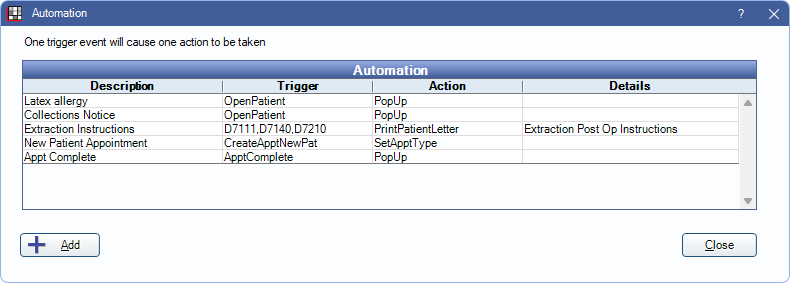
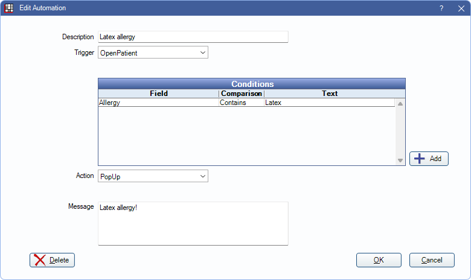
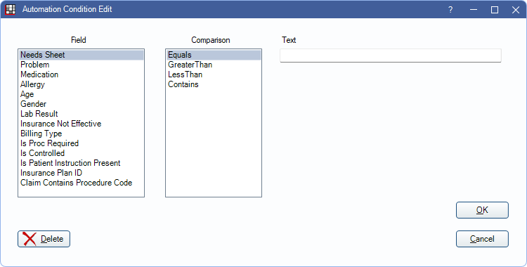

Automation
Automation can be used to automatically perform actions when a specific trigger occurs and condition is met.
In the Main Menu, click Setup, Automation.
 See our video: Automation in Open Dental Webinar.
See our video: Automation in Open Dental Webinar.
Examples:
- Display a popup warning when a patient's insurance plan effective date ends.
- Display a popup warning for a patient who has a specific allergy or condition.
- Generate patient instructions when a specific procedure is completed (e.g., extraction).
- Automatically generate a letter when a patient misses their appointment.
- Automatically generate a letter to a referral source when a new patient schedules their first appointment.
- Restrict appointment scheduling when a patient has a specific billing type (e.g., collections).
Add Automation
Click Add to create a new Automation, or double-click an existing Automation to edit.
Options available may change depending on the selected Trigger and/or Action.
Description: Enter the identifying name of the Automation.
Trigger: Select the action that will trigger this Automation. There are eight options:
- ProcedureComplete: When a procedure is Set Complete or Procedure Status is changed to Complete. Specify procedure code(s) as needed.
- BreakAppointment: When an appointment is broken (Break Appointment).
- CreateApptNewPat: When an appointment is created for a patient with no appointment history (new patient).
- OpenPatient: When a patient's record is opened/selected.
- CreateAppt: When an appointment of any type is created.
- ScheduleProcedure: When a specific procedure is scheduled. Specify procedure code(s) as needed.
- SetBillingType: When a billing type changes (Edit Patient Information).
- RxCreate: When a new prescription is created for a controlled substance or when a new prescription is created that requires a procedure code. Works with the conditions IsControlled and IsProcRequired. For electronic prescriptions the Automation will occur when the prescription is imported to Open Dental. Also see DoseSpot eRx / Prescription, NewCrop eRx / Prescription, Rx / Prescription.
- Create Claim: Click the Create Claim button in Account Module.
- OpenClaim: Open a Claim.
- ApptComplete: Set Appointment Complete. Only appointments not currently in Complete status are triggered.
Procedure Code(s): If ProcedureComplete or ScheduleProcedure is the trigger, enter the procedure codes, separated with commas (no spaces), or click [...] to select from the Procedure Codes.
Conditions (optional): Set conditions that must be met for the action to occur.
- Click Add or double-click on an existing condition.
 - Select the condition details then click OK.
- Field: The field that will be checked.
- Comparison: The qualifier.
- Text: The text that must be matched. For Billing Type click [...] to select from a billing type pick list.
Conditions are ANDed together. In other words, they must all be true for the Automation action to occur. To handle OR conditions, create separate Automations.
Action: Select the automated action that will occur when the trigger and/or conditions are met.
- PrintPatientLetter: Generate Letter (e.g., for patient handouts). To generate multiple handouts, create multiple Automations.
- CreateCommlog: Open the Commlog window.
- PrintReferralLetter: Generate ReferredFrom Referral Letter.
- ShowExamSheet: Open blank Exam Sheet.
- PopUp: Show a popup message.
- SetApptStatusASAP: Set the appointment status to ASAP.
- ShowConsentForm: Open the selected Consent Form.
- SetApptType: Set the Appointment Types when CreateApptNewPat or CreateAppt trigger is selected.
- PopUpThenDisable10Minutes: The popup message appears once, then the Automation is disabled for 10 minutes.
- PatRestrictApptSchedTrue: Restrict appointment scheduling for the patient by marking the Appointment scheduling is restricted checkbox on the Edit Patient Information window. Typically used when SetBillingType is the trigger.
- PatRestrictApptSchedFalse: Do not restrict appointment scheduling for the patient (unchecks the Appointment scheduling is restricted checkbox on the Edit Patient Information window). Typically used when SetBillingType is the trigger.
- PrintRxInstuction: Generate Rx Instructions for a patient when instructions are added to a new prescription.
- Change Pat Status: Change the patient status for the selected patient.
Sheet Def: Shows when PrintPatientLetter, PrintReferralLetter, or ShowExamSheet is selected as the Action. Select the sheet template to use. See Sheets.
Comm Type: Shows when CreateCommlog is selected as the Action. Select the default comm log type.
Message: Shows when CreateCommlog or PopUp is selected as the Action. Enter the default message.
Patient Status: Shows when Change Pat Status is selected as the Action. Enter the patient status.
Fields
Most fields that list when adding or editing a condition are self explanatory. Below are a few that need additional explanation.
- Needs Sheet: Patient needs a specific sheet filled. Action does not occur if the sheet was filled out today. Sheet name must be exact.
- Lab Result: Only used in EHR. See EHR Medical Lab Order ( CPOE ).
- Insurance Not Effective: Compares the current date and time to the effective dates of the patient's insurance plan. If today's date does not fall within the effective date, or no effective date is entered, the action will trigger.
- Is Proc Required: Only works with RxCreate triggers. Triggers action when the added prescription is marked as Is Proc Required.
- Is Controlled: Only works with RxCreate triggers. Triggers action when the added prescription is marked as a Controlled Substance.
- Is Patient Instruction Present: Only available when using RxCreate as the trigger. Triggers the action when creating an Rx that includes patient instructions.
- Insurance Plan ID: Unique identifier automatically assigned to an Insurance Plan. Triggers action when the patient is assigned an insurance plan with a matching Insurance Plan ID. Conditions can be set to Contains or Equals.
- Claim Contains Procedure Code: Works with Create Claim and Open Claim triggers. Triggers the action when a claim includes a matching procedure code. If the Automation includes multiple Claim Contains Procedure Code entries, a claim must include all procedure codes for the automation to occur.